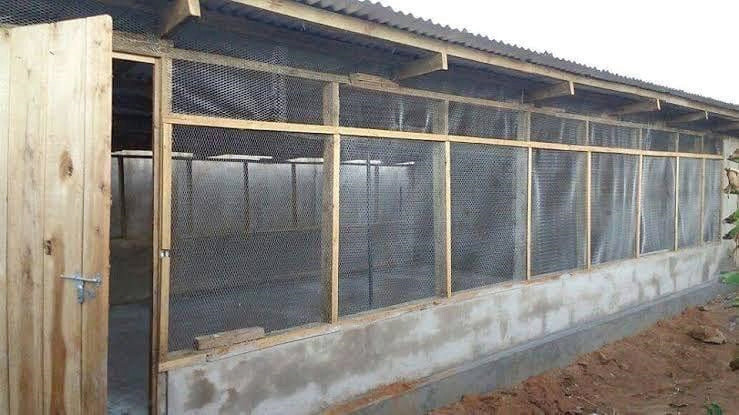

The basic construction requirements for an open-sided house are as follow:
(a) Widths: The width should not exceed 12.6 m. The houses wider than this will not provide ample ventilation during hot weather.
(b) Heights: Most open-sided poultry houses have a stud that is 2.4 m long. This represents the distance from the foundation or base of a building to the roofline or top. Since it is always hot in most parts of Tanzania, it is recommended to increase the stud height of the house to 3 m. The centre height should be 5.2 m.
(c) Lengths: Depending on the level of the land, you can choose any length that is convenient for you. However, for small units, 10.3 m is recommended.
(d) Foundation: A solid and adequate foundation should support the building. Concrete and other termite-proof materials should be used. The evenness (how smooth and level) of the foundation determines the evenness of the completed building.
(e) Floor: Concrete or rammed earth floor can be used. However, with disease-control programmes, the concrete or similar floor is mandatory. Such a floor is also necessary when the soil is dense and can absorb and transfer water from the lower subsoil. But, in certain areas where the soil is sandy, a concrete slab is not used when birds are placed on the floor.